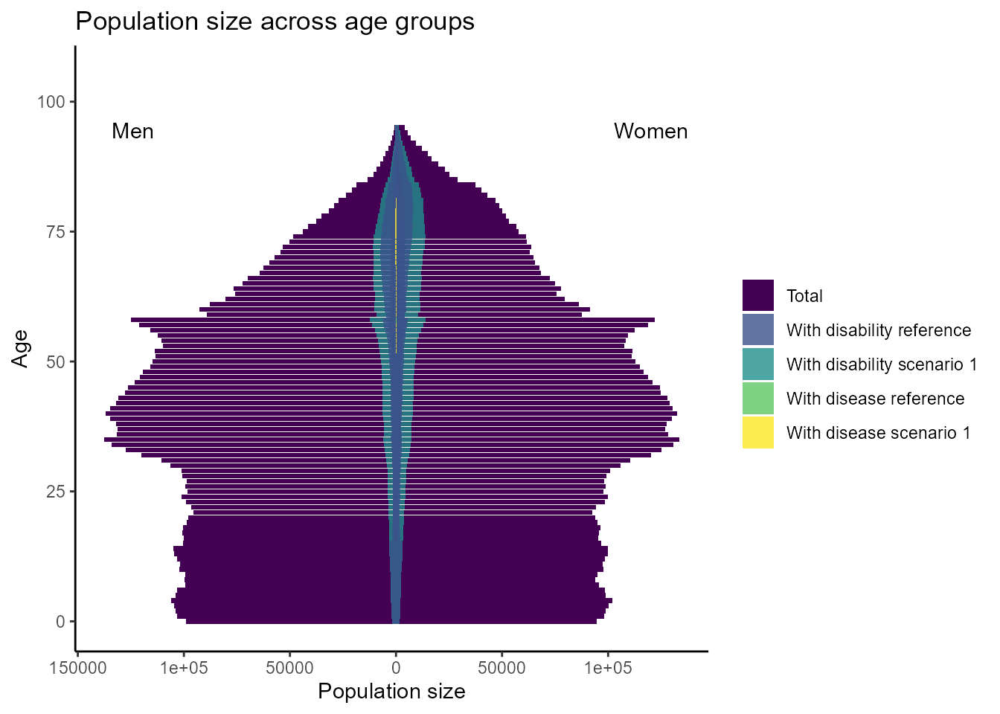
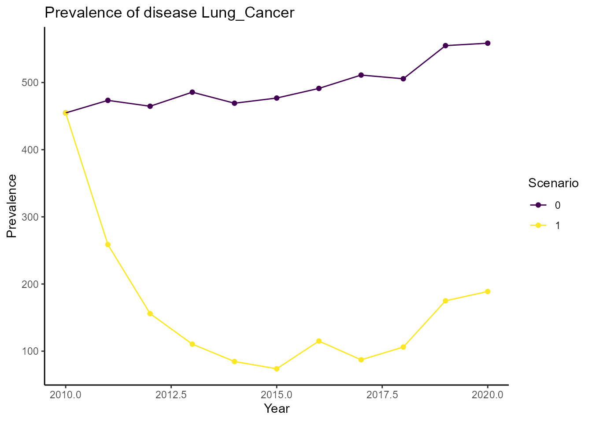
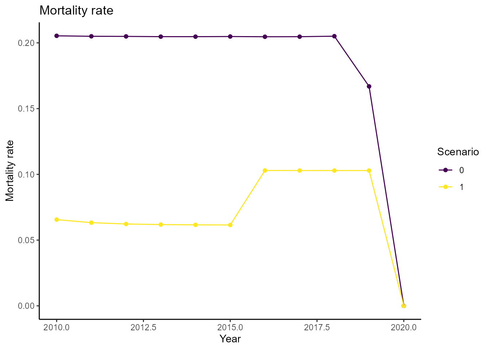
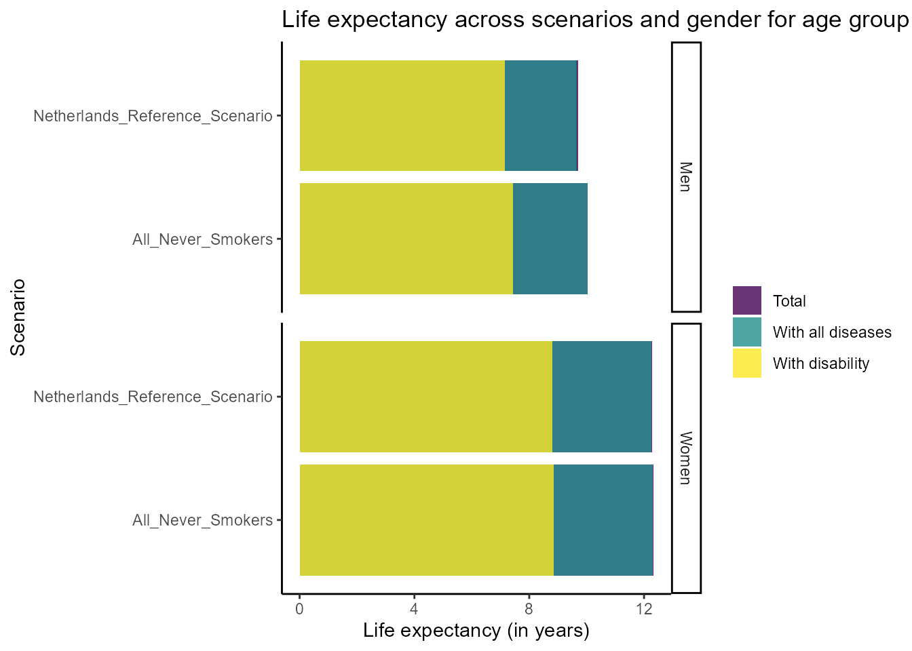

Introduction to hiaR
hiaR.RmdThis introduction shows how to use the hiaR package in a
simple example. The hiaR package is a wrapper for a Java
application which implements the DYNAMO-HIA model. For details on the
DYNAMO-HIA model, see the DYNAMO-HIA documentation. The
DYNAMO-HIA model simulates the health impact of interventions on risk
factors on disease outcomes and life expectancy in a population. In this
example, we simulate the effect of an intervention on smoking on the
development of lung cancer in the Dutch population.
We start by loading the hiar package:
Reference data
To run simulations, the DYNAMO-HIA model requires reference data. The
reference data for the Netherlands is included in the package. We move
the reference data into a temporary local directory using the withr package:
# Create local temporary directory; the directory will be deleted when the R session is finished
temp_dir <- withr::local_tempdir()
fs::dir_copy(system.file("extdata", "example-nl", package = "hiaR"), temp_dir, overwrite = TRUE)The Reference_Data folder in our directory now contains
the reference data for the Netherlands including information about the
Dutch population, diseases, and risk factors. These will be used mainly
as the reference scenario in the simulations. We can get an
overview of the available populations, diseases, and risk factors with
helper functions from the hiaR package:
# Define path to reference data
reference_data_path <- fs::path(temp_dir, "Reference_Data")
cat("Available diseases:\n")
#> Available diseases:
disease_names <- get_disease_names(reference_data_path)
#> C:/Users/RUNNER~1/AppData/Local/Temp/RtmpoRI94J/file15f8b036025/Reference_Data/Diseases
#> └── Lung_Cancer
cat("\nAvailable populations:\n")
#>
#> Available populations:
population_names <- get_population_names(reference_data_path)
#> C:/Users/RUNNER~1/AppData/Local/Temp/RtmpoRI94J/file15f8b036025/Reference_Data/Populations
#> └── Netherlands
cat("\nAvailable risk factors:\n")
#>
#> Available risk factors:
risk_factor_names <- get_risk_factor_names(reference_data_path)
#> C:/Users/RUNNER~1/AppData/Local/Temp/RtmpoRI94J/file15f8b036025/Reference_Data/Risk_Factors
#> └── Smoking_cat3Configuration
We will now configure a simulation to assess the effect of the risk
factor smoking on the health of the Dutch population. We will use a risk
factor configuration with three categories (never smoked, former smoker,
current smoker). To configure the risk factor, we need to provide a
unique name, the name of the file with the risk factor transition type,
and the name of the file with the risk factor prevalence. We can get the
names of the files from the reference data with the
get_risk_factor_filenames function:
get_risk_factor_filenames(reference_data_path, "Smoking_cat3")
#> C:/Users/RUNNER~1/AppData/Local/Temp/RtmpoRI94J/file15f8b036025/Reference_Data/Risk_Factors/Smoking_cat3
#> ├── configuration.xml
#> ├── Prevalences
#> │ ├── NL_RF_smoking_cat3_Prev_V1.xml
#> │ └── RF_smoking_cat_All_Never_Smokers_Prev.xml
#> ├── Relative_Risks_For_Death
#> │ └── RR_smoking_cat3_to_TotalMort.xml
#> └── Transitions
#> ├── NL_RF_smoking_Transitions_Netto.xml
#> └── NL_RF_smoking_Transitions_Zero.xmlThe files in the different sub directories are briefly described here (for details, see the DYNAMO-HIA documentation):
-
Prevalence: Files with data on which part of the population is in which risk factor category (split by age and gender) -
Relative_Risks_For_Death: Files with the relative risks for death for each risk factor category (split by age and gender) -
Relative_Risks_For_DisabilityFiles with the relative risks for disability for each risk factor category (split by age and gender) -
Transitions: Files with the transition probabilities between the risk factor categories
With the file names we can configure the risk factor:
smoking_config <- configure_risk_factor(
name = "Smoking_cat3", # Should be the same as the name in the reference data
transition_filename = "NL_RF_smoking_Transitions_Netto",
prevalence_filename = "NL_RF_smoking_cat3_Prev_V1"
)We chose a “Netto” transition file which indicates that the risk factor prevalence for each age and gender group will remain the same during the simulation.
The DYNAMO-HIA model also takes different diseases within the
population into account. While the reference data provides information
about several diseases we will only look at lung cancer in this example.
The disease configuration requires a unique name for the disease, names
of files with the disease prevalence, incidence, excess mortality, and
disability weights. We can get the names of the files from the reference
data with the get_disease_filenames function:
get_disease_filenames(reference_data_path, "Lung_Cancer")
#> C:/Users/RUNNER~1/AppData/Local/Temp/RtmpoRI94J/file15f8b036025/Reference_Data/Diseases/Lung_Cancer
#> ├── Disability
#> │ └── NL_disease_LungCa_DALY_V1.xml
#> ├── Excess_Mortalities
#> │ └── NL_disease_LungCa_ExecMor_V2.xml
#> ├── Incidences
#> │ └── NL_disease_LungCa_Inc_V2.xml
#> ├── Prevalences
#> │ └── NL_disease_LungCa_Prev_V2.xml
#> └── Relative_Risks_From_Risk_Factor
#> ├── RR_to_LungCa-Alcohol_cat5.xml
#> ├── RR_to_LungCa-Smoking_cat3.xml
#> ├── RR_to_LungCa-Smoking_dur.xml
#> ├── RR_to_LungCa_V2-BMI_cat3.xml
#> └── RR_to_LungCa_V2-BMI_cont.xmlA brief description of the sub directories:
-
Disability: Files with the disability (disability-adjusted life years) weights for the disease (split by age and gender) -
Excess_Mortalities: Files with the additional mortality when carrying the disease (split by age and gender) -
Incidence: Files with the incidence of the disease (split by age and gender) -
Prevalence: Files with the prevalence of the disease (split by age and gender) -
Relative_Risks_From_Diseases: Files with the relative risks of carrying the disease when having another disease (split by age and gender; not used in this example) -
Relative_Risks_From_Risk_Factor: Files with the relative risks of carrying the disease when being exposed to a risk factor (split by age and gender)
With the file names we can configure the disease:
lung_cancer_config <- configure_disease(
name = "Lung_Cancer",
prevalence_filename = "NL_disease_LungCa_Prev_V2",
incidence_filename = "NL_disease_LungCa_Inc_V2",
excess_mortality_filename = "NL_disease_LungCa_ExecMor_V2",
disability_weights_filename = "NL_disease_LungCa_DALY_V1"
)We can also configure a relative risk of having lung cancer due to smoking. The relative risk configuration requires an index, the name of the risk factor, the name of the disease, and the name of the file with the relative risk data:
lung_cancer_smoking_rr_config <- configure_relative_risk(
index = 0, # Start with zero
from = "Smoking_cat3",
to = "Lung_Cancer",
relative_risk_filename = "RR_to_LungCa-Smoking_cat3"
)Besides risk factors and diseases, we also need to configure the intervention scenario that we want to simulate. Scenarios require a unique name, a success rate for an intervention, the minimum and maximum age as well as the targeted gender for the intervention. Most importantly, they need names of files with the transition type and prevalence of the risk factor which is changed due to the intervention.
We create a scenario that intervenes on the risk factor smoking and assumes that the targeted population never smoked. We choose this intervention by specifying a prevalence file that only contains “never smokers”.
smoking_intervention <- configure_scenario(
name = "All_Never_Smokers",
transition_filename = "NL_RF_smoking_Transitions_Netto", # Same as in reference scenario
prevalence_filename = "RF_smoking_cat_All_Never_Smokers_Prev" # Different from reference scenario
)Now that we have configured a risk factor, disease, and scenario, we
write them to an XML file in a new subfolder in the
Simulations folder using the
create_simulation_dir function. The function requires the
name of the simulation and additional parameters to configure the
simulation. We will simulate the effect of the smoking intervention on
the Dutch population for 10 years starting in 2010. We will use a random
seed of 42 to ensure reproducibility.
simulation_name <- "Netherlands_Smoking_Intervention"
create_simulation_dir(
simulation_name = fs::path(temp_dir, "Simulations", simulation_name),
population_name = "Netherlands",
has_newborns = TRUE,
starting_year = 2010,
number_of_years = 10,
population_size = 10,
min_age = 0,
max_age = 95,
time_step = 1,
ref_scenario_name = "Netherlands_Reference_Scenario",
random_seed = 42,
scenarios = list(smoking_intervention), # Wrap in list because we could have multiple scenarios
diseases = list(lung_cancer_config), # Wrap in list because we could have multiple diseases
risk_factors = smoking_config, # No list because we only have one risk factor
relative_risks = list(lung_cancer_smoking_rr_config) # Wrap in list because we could have multiple relative risks
)
#> [1] TRUEThe function returns TRUE indicating that our
configurations are valid and the subfolder was successfully created. We
can look at all the available simulations with the
get_simulation_names function:
get_simulation_names(temp_dir)
#> C:/Users/RUNNER~1/AppData/Local/Temp/RtmpoRI94J/file15f8b036025/Simulations
#> └── Netherlands_Smoking_InterventionThe subfolder will also contain the results from the simulation.
We need to add the simulation name to a batch file which we will use as input for the DYNAMO-HIA Java application.
Running DYNAMO-HIA
Before we can run the simulation, we need to download the DYNAMO-HIA
Java application. We can do this automatically with the
download_github_release function. The function will
automatically download the correct version for our operating system and
place it into our temporary directory.
download_github_release(
repo_url = "https://github.com/Dynamo-HIA/dynamo-hia",
release_tag = "v3.0.0-beta.1",
dest_dir = temp_dir
)We can now run the simulation using the run_dynamo_hia
function. The function takes the path to the batch file and the path to
the DYNAMO-HIA executable as arguments. The latter is set automatically
by the function download_github_release and stored in the
environment variable DYNAMO_HIA_PATH.
withr::with_dir(temp_dir, {
run_dynamo_hia(batch_file_name, fs::path(temp_dir, Sys.getenv("DYNAMO_HIA_PATH")))
})
#> [1] TRUEThe function returns TRUE indicating that the simulation
was successful. The results of the simulation are stored in the
simulation folder.
Loading and visualizing results
We can load the results with the load_simulation_results
function. The function requires the name of the simulation and the path
to the working directory. We start by loading the population results
(using type = batchoutput):
df_population <- load_simulation_results(temp_dir, simulation_name, type = "batchoutput")
# Get an overview of the data frame
head(df_population)
#> year scenario gender riskClass age total.number Lung_Cancer
#> 1 2010 0 0 Never_smoker 0 99076 0
#> 2 2010 0 0 Never_smoker 1 103198 0
#> 3 2010 0 0 Never_smoker 2 103889 0
#> 4 2010 0 0 Never_smoker 3 104573 0
#> 5 2010 0 0 Never_smoker 4 106100 0
#> 6 2010 0 0 Never_smoker 5 104081 0
#> with.disability with.disease mortality incidence.of.Lung_Cancer
#> 1 2005.416 0 499.07038 0
#> 2 2153.652 0 36.93724 0
#> 3 2235.289 0 28.45966 0
#> 4 2319.714 0 21.74706 0
#> 5 2426.453 0 14.21647 0
#> 6 2453.870 0 14.88270 0With the population results, we can plot the population pyramid for the starting year of our simulation showing the difference between our smoking intervention scenario and the reference scenario:
plot_population_pyramid(df_population, year = 2010, scenario = 1, difference = TRUE)
We can see that disability is more prevalent in older age groups and lung cancer only occurs in age groups above 50 and is generally a rare disease.
We can also plot the prevalence of lung cancer at a specific age (75) over time:
plot_prevalence(df_population, disease = "Lung_Cancer", age = 75)
The plot shows that the prevalence of lung cancer decreases over the years in our intervention scenario.
We can also compare the mortality across scenarios over time:
plot_mortality(df_population, age = 75)
It seems like our intervention has a positive effect on mortality rates in this specific age group.
Finally, we can plot the simulated life expectancy. This requires the
life expectancy results which we can load using
type = cohortLE:
df_life_expectancy <- load_simulation_results(temp_dir, simulation_name, type = "cohortLE")
# Get an overview of the data frame
head(df_life_expectancy)
#> scenario gender age total.life.expectancy
#> 1 Netherlands_Reference_Scenario males 0 77.26253
#> 2 Netherlands_Reference_Scenario males 1 76.76924
#> 3 Netherlands_Reference_Scenario males 2 75.64520
#> 4 Netherlands_Reference_Scenario males 3 75.16501
#> 5 Netherlands_Reference_Scenario males 4 73.52557
#> 6 Netherlands_Reference_Scenario males 5 72.77295
#> expectancy.with.disability expectancy.with.all.diseases
#> 1 6.329091 0.11618547
#> 2 6.361475 0.10652938
#> 3 6.317164 0.11598473
#> 4 6.388107 0.07567477
#> 5 6.242434 0.13801868
#> 6 6.267935 0.10949140
#> life.expectany.with.Lung_Cancer
#> 1 0.11618547
#> 2 0.10652938
#> 3 0.11598473
#> 4 0.07567477
#> 5 0.13801868
#> 6 0.10949140We can now plot the life expecaancy for the different scenarios and genders at a specific age group:
plot_life_expectancy(df_life_expectancy, age = 75)
We can see that our intervention increases life expectancy in this age group.